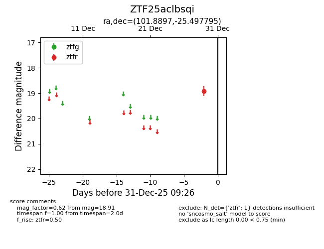
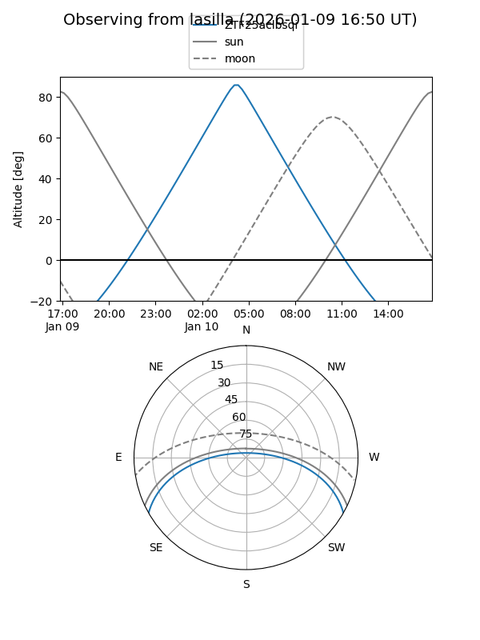
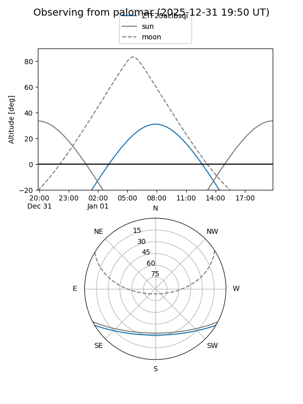

ZTF25aclbsqi
Target ZTF25aclbsqi at 2025-12-31 17:00
Aliases and brokers:
FINK:
Lasair:
ALeRCE:
alt names
ZTF25aclbsqi (ztf,fink_ztf)
Coordinates:
equatorial (ra, dec) = 101.8897,-25.49779
equatorial (HMS+DMS) = 06:47:33.52,-25:29:52.06
galactic (l, b) = (235.5584,-12.11571)
Flags:
Photometry:
last ztfr=18.91
1 ztfr detections
Lightcurve

Visibility


Additional plots